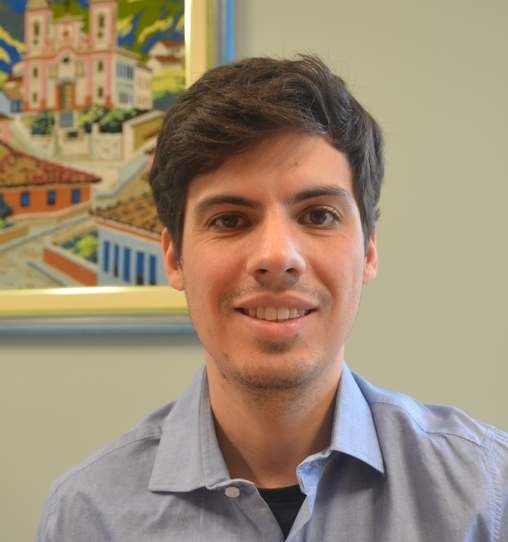

Evandro L. T. P. Cunha
(Evandro Landulfo Teixeira Paradela Cunha)
Esta página em português
Hi! I am a professor (equiv. to assistant prof.) at the Faculty of Letters of Universidade Federal de Minas Gerais (FALE/UFMG, Brazil), where I lead the ADA: Working Group on Computational Linguistics. I was a Fulbright Visiting Scholar at Portland State University (2023), a fellow of the 4th Intercontinental Academia (2021-22) and a visiting researcher at the Max-Planck-Institut für evolutionäre Anthropologie (2014-15). I hold a double PhD degree in Linguistics from Universiteit Leiden and in Computer Science from UFMG, and I currently conduct research that encompasses linguistics, computational science and neuroscience, mainly in the following topics: brain-computer interfaces, human-machine interaction, computational historical linguistics, computational forensic linguistics and computer-mediated communication. I also teach courses and supervise research in the areas of Italian, applied linguistics and anthropological linguistics. If you are interested in my research topics and want to collaborate on one of my projects, feel free to get in touch!

Publications and presentations
• Google Scholar
Areas of research
• Brain-computer interfaces: brain-computer interface systems for augmentative and alternative communication.
• Human-machine interaction: linguistic interaction between humans and robots/intelligent virtual assistants.
• Computational historical linguistics: compilation and analysis of diachronic and historical corpora; computational modelling and simulation of language variation and change.
• Forensic computational linguistics: authorship analysis; computational methods for investigative and evidential linguistics.
• Computer-mediated communication: collection and analysis of language data from the web; misinformation, manipulation and extremism on the internet.
• Romance linguistics: Italian languages in Brazil; minority Romance languages; .
• Anthropological linguistics: language, anthropology and archaeology; onomastics; documentation, preservation and revitalization of endangered languages.
Groups
• 4th Intercontinental Academia (ICA4)
• ADA: Working Group on Computational Linguistics (FALE/UFMG)
• Italian Studies at FALE/UFMG
Teaching
• Complete list of courses taught in undergraduate and graduate programs
CV
• In Portuguese (CV Lattes)
• In English (pdf)
UN Agenda 2030
I am connected to the Sustainable Development Goals of the UN 2030 Agenda and I identify my current work especially with the goals 3. Good Health and Well-Being, 4. Quality Education e 16. Peace, Justice and Strong Institutions.
![[3. Saúde e Bem-Estar]](../imgs/E_WEB_03.png)
![[4. Educação de Qualidade]](../imgs/E_WEB_04.png)
![[16. Paz, Justiça e Instituições Eficazes]](../imgs/E_WEB_16.png)
Contact
E-mails: cunhae@ufmg.br / evandro.cunha@fulbrightmail.org
Address: Faculdade de Letras da UFMG. Av. Antônio Carlos, 6627 - Campus Pampulha. CEP: 31270-901. Belo Horizonte, MG, Brasil
Office: L 4012. Phone (office): +55 31 3409-6054. Box (faculty common room): 116 (write me if you put something there)
Academia.edu,
GitHub,
Google Scholar,
Lattes,
LinkedIn,
ORCID,
Research Gate,
Twitter
Updated in 2023, inspired in the '90s.